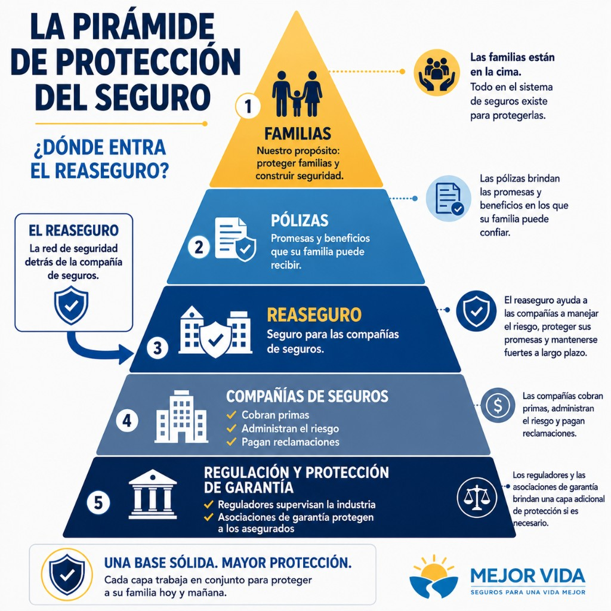

24 de mayo de 2026 · Imagen: pirámide del seguro (hero-es.png) · Enfoque: reaseguro / Prismic
../img/blog-generated/weekly-insurance-update-2026-05-24/hero-es.png

🏦 ¿Qué es el REASEGURO — y por qué le importa a su compañía de seguro de vida? Piénselo como un seguro para las compañías de seguros. Cuando una aseguradora emite pólizas, debe apartar dinero (llamado reservas) para pagar reclamaciones futuras. A veces la aseguradora transfiere parte de ese riesgo financiero a otra compañía llamada reaseguradora. ¿Por qué? ✅ Ayuda a las aseguradoras a administrar el riesgo ✅ Libera capital para ofrecer más productos ✅ Apoya precios más competitivos ✅ Ayuda a las compañías a seguir creciendo y emitiendo pólizas Noticia actual de la industria: Esta semana, la compañía de reaseguro de vida y anualidades Prismic anunció que recaudó aproximadamente 1.900 MILLONES de dólares en nuevos compromisos — una señal de que los grandes inversionistas siguen confiando en los mercados de seguro de vida a largo plazo. Los mercados de reaseguro sólidos pueden ayudar a respaldar la estabilidad de las aseguradoras, la disponibilidad de productos y la flexibilidad en los precios. En resumen: Cuando usted compra un seguro de vida o de gastos finales, hay todo un sistema financiero trabajando entre bastidores para ayudar a las compañías de seguros a mantenerse fuertes y preparadas para pagar reclamaciones futuras. Esta es también una razón por la que las calificaciones de solidez financiera importan al elegir una aseguradora. #SeguroDeVida #GastosFinales #EducacionEnSeguros #PlanificacionFinanciera #MejorVidaInsurance
Aquí está el artículo de esta semana (historia 2 — reaseguro Prismic y mercados de capital): https://www.mejorvidainsurance.com/blog/weekly-insurance-update-2026-05-24.html#story2 Artículo completo de la semana del 24 de mayo: https://www.mejorvidainsurance.com/blog/weekly-insurance-update-2026-05-24.html Si prefieres platicarlo por WhatsApp: https://wa.me/14024405438?text=Hola%2C%20vi%20su%20publicaci%C3%B3n%20sobre%20el%20reaseguro%20y%20quiero%20orientaci%C3%B3n.
img/blog-generated/weekly-insurance-update-2026-05-24/hero-es.pngFB/post-package-weekly-2026-05-24.json